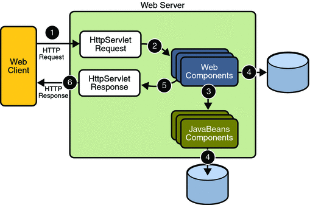
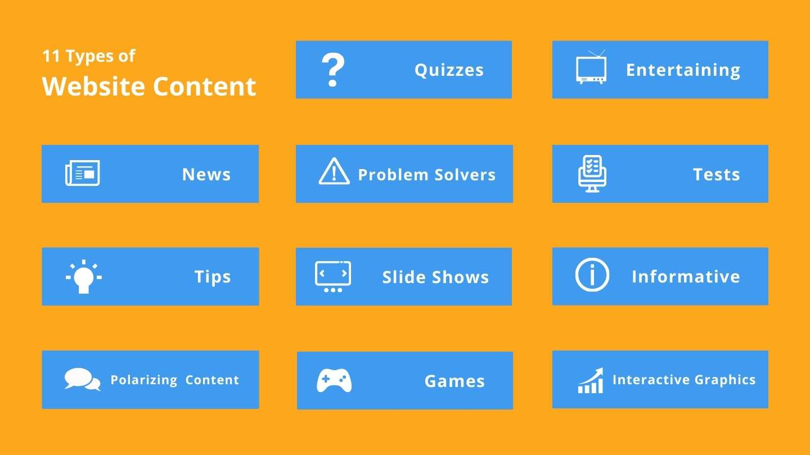
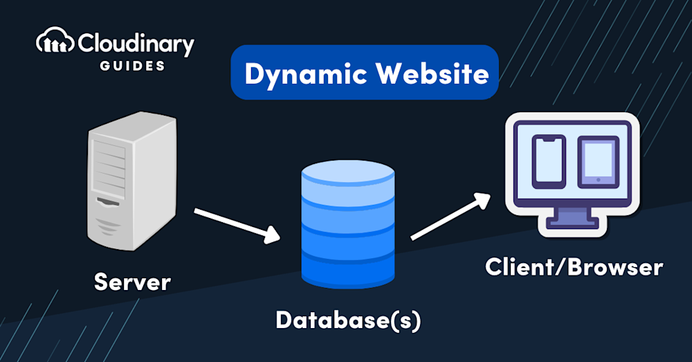

WEB TECHNOLOGY
Table of Conents
(Click on the topics you want to learn)
Client/Server architecture

Client Server Model
The Client-Server Model is a distributed architecture where clients request services and servers provide them.
Clients send requests to servers, which process them and return the results. Clients don’t share resources among themselves but depend on the server.
Common examples include email systems and the World Wide Web, where clients (like browsers or email apps) interact with servers to access content or send data.
Client
When we talk about a "Client," it refers to a device that requests and receives services from a server
. The client is the entity that initiates communication, asking for data or resources from the server.
For example, web browsers like Google Chrome, Mozilla Firefox or Safari are common client applications that request data from a server to render web pages.
Server
A Server, on the other hand, is a remote computer or system that provides data, resources or services to clients.
It listens to incoming client requests, processes them and sends the required information back.
A server can handle multiple client requests simultaneously.
Components of Web Application

Front End(Client Side)
- HTML :Provides the structure and content of the web page.
- CSS :Styles the visual presentation of the HTML elements.
- Javascript : Adds interactivity and dynamic behavior to the web page.
- Web browser :The user's interface for accessing the web application
Back End (Server Side)
- WEB SERVER :Receives and processes requests from the client and sends back responses.
- APPLICATION SERVER : Handles the application's business logic, user authentication, and data processing
- Programming Languages and Frameworks : Languages like Python, Java, Ruby, PHP, or JavaScript (Node.js) are used to build the backend logic. Frameworks like Django, Rails, or Spring provide structure and tools for development
Database
Stores and manages persistent data, such as user information, product details, or other application-specific data
Types of web contents

Web content encompasses all the information and digital media presented on a website. This includes text, images, videos, audio, and interactive elements. It can be broadly categorized into passive and interactive content, with various types like blog posts, product pages, case studies, and user-generated content falling under these categories
HTTP request

An HTTP request is a message sent by a client (such as a web browser) to a server to request a resource or to perform an action on a resource. It is a fundamental component of the Hypertext Transfer Protocol (HTTP), which is the foundation of data exchange on the World Wide Web.
HTTP method
- GET: Retrieves data from the server.
- POST: Sends data to the server, often to create a new resource.
- PUT: Replaces the entire content of a resource at a specific URI.
- PATCH: Applies partial modifications to a resource.
- DELETE: Removes a resource from the server.
- HEAD: Requests only the headers of a resource, without the body.
- OPTIONS: Describes the communication options for the target resource.
Dynamic web pages

Dynamic web pages are web pages whose content can change and adapt based on various factors, such as user interaction, time of day, database information, or other variables. Unlike static web pages, which deliver the same pre-built content to every visitor, dynamic pages offer a personalized and interactive experience.
Application Servers

An application server is a type of server that hosts applications or software, delivering business applications to clients through communication protocols. It sits between the web server (or client) and the database, handling application logic, managing resources, and facilitating interaction between the user interface and the backend database.
back to top